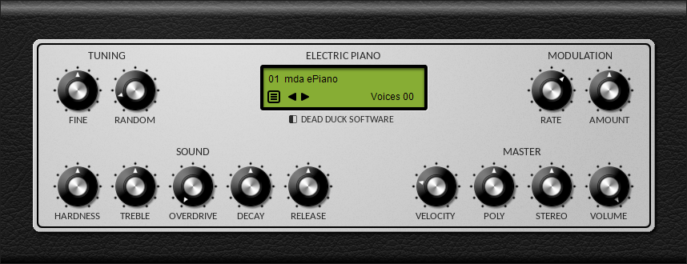

DPiano-E Electric Piano¶
DPiano-E is an electric piano plugin in VST 2.4 format for Windows 32-bit and 64-bit hosts.
The following sections describe the controls available.
Tuning¶
Tuning is controlled by the following parameters:
Fine - adjust the master tuning.
Random - randomise the tuning of keys across the keyboard.
Sound¶
The following controls shape the sound of the piano:
Hardness - set the quality of the sound from mellow to harsh.
Treble - set the brightness of the sound.
Overdrive - set the overdrive distortion amount.
Decay - set the rate at which the sound fades while being held.
Release - set the rate at which the sound fades after being released.
Modulation¶
Manage the velocity response using the following controls:
Rate - set the modulation rate.
Amount - set how the modulation is applied; from the centre turn clockwise for tremolo or anticlockwise for autopan.
Master¶
Master controls are as follows:
Velocity - set how the volume changes in response to changes in velocity.
Poly - set the maximum number of voices available, from 1 to 32.
Stereo - set the amount of key-panning applied (see below).
Volume - set the master volume.
As notes are played across the keyboard from low to high, key-panning allows them to be played at different positions in the stereo field, from left to right. This attempts to mimic the physical width of a real piano and can be adjusted for width using the stereo control. Alternatively it can be turned off by setting the value to 0 for a mono sound.
Credits¶
DPiano-E is based on code developed by mda and released under the MIT license, copyright © 1999-2008 by Paul Kellett. See the licensing files included in the Instrument Bundle for more details.